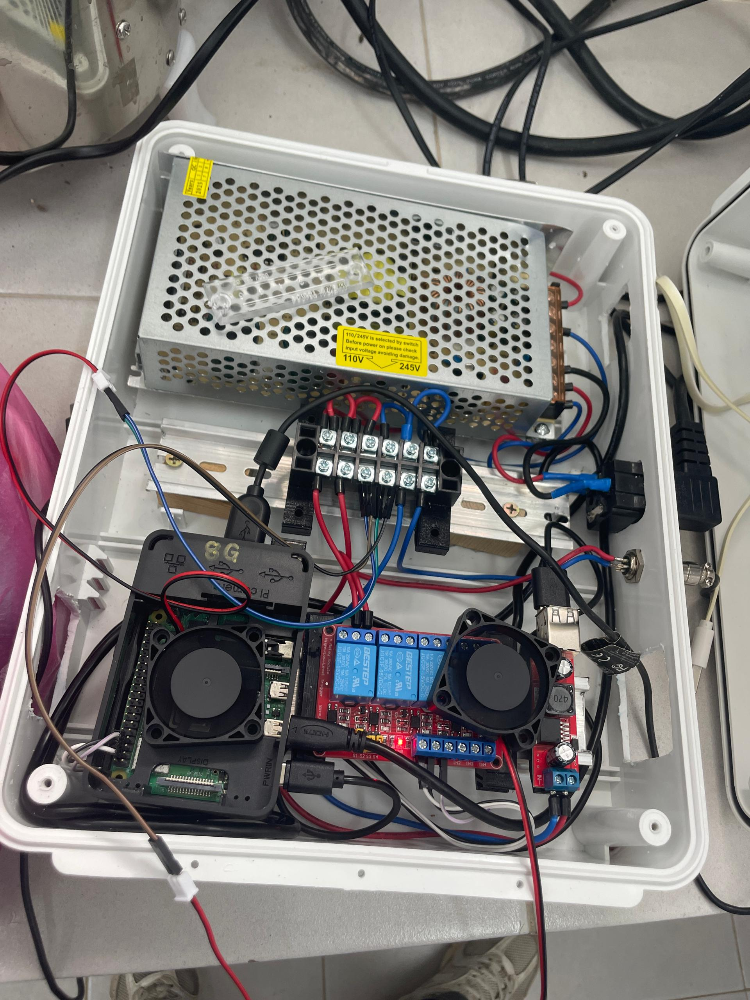
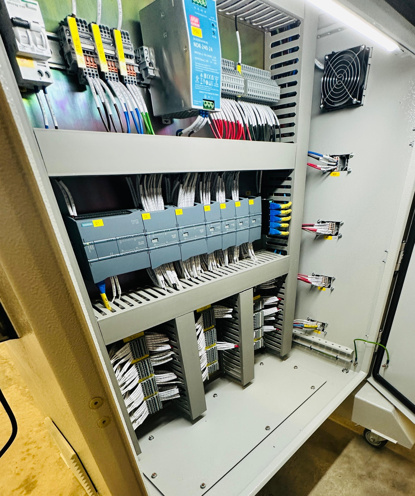
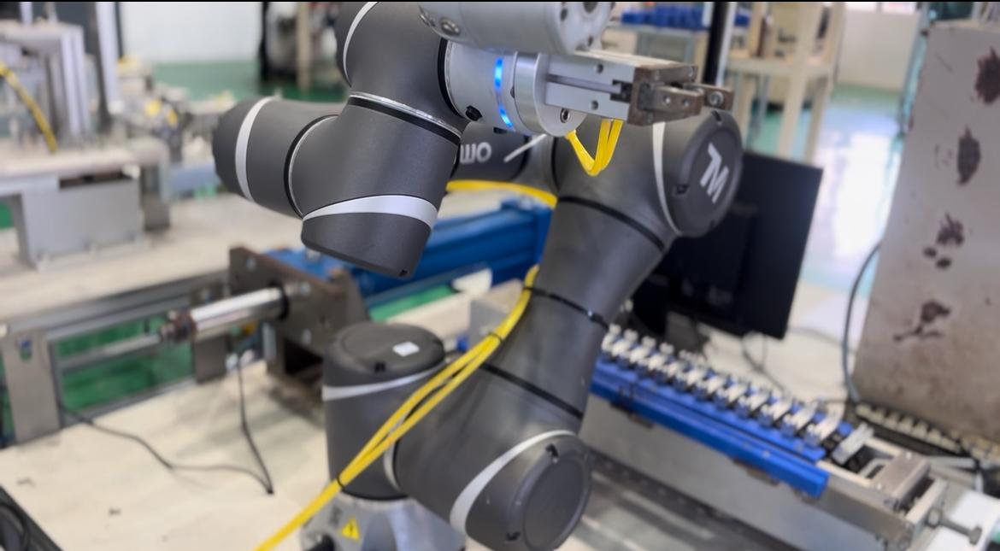

Project: Ready-to-use Educational Hardware Kit
Problem Statement: Students and lecturers often face difficulties with complex wiring when setting up hardware for IoT or automation demonstrations. A plug-and-play solution is needed.
Role: Hardware Developer & System Integrator
Tools Used: Raspberry Pi, 4-Channel Relay Module, Power Supply Unit (PSU), Custom Plastic Enclosure, I/O Connectors.
Outcome: Successfully developed a compact, portable kit. Users only need to connect their desired sensors to the input connectors, write their code, and the system is ready to use—eliminating complex wiring.

Project: Industrial Collaboration (Joy Venture)
Problem Statement: Manual handling and transferring of raw liquid chemical materials between machines are inefficient, hazardous, and prone to spillage.
Role: PLC Programmer & System Integrator (Team Project)
Tools Used: Industrial PLC Controller, Sensors, Actuators, Motor Controls, Vendor Integration.
Outcome: Successfully automated the transfer process of raw materials across multiple machines. The system ensures precise control, improves safety, and maintains consistent production output.

Project: Automated Pick & Place Material Handling
Problem Statement: Manual material handling creates a bottleneck and slows down the conveyor line. Tight synchronization between hardware is required to eliminate human error.
Role: PLC Programmer & Robot Integrator
Tools Used: OMRON Robot, TMflow (Robot Programming), PLC, Conveyor System, Photoelectric Sensors, Pneumatic Gates.
Outcome: Achieved seamless bi-directional PLC-Robot handshaking. The PLC controls the conveyor and gates based on sensor inputs. Once the item reaches the robot station, the PLC sends a trigger signal to the robot. Using TMflow, the robot executes the pick-and-place sequence and sends an acknowledgment signal back to the PLC to resume the conveyor cycle.